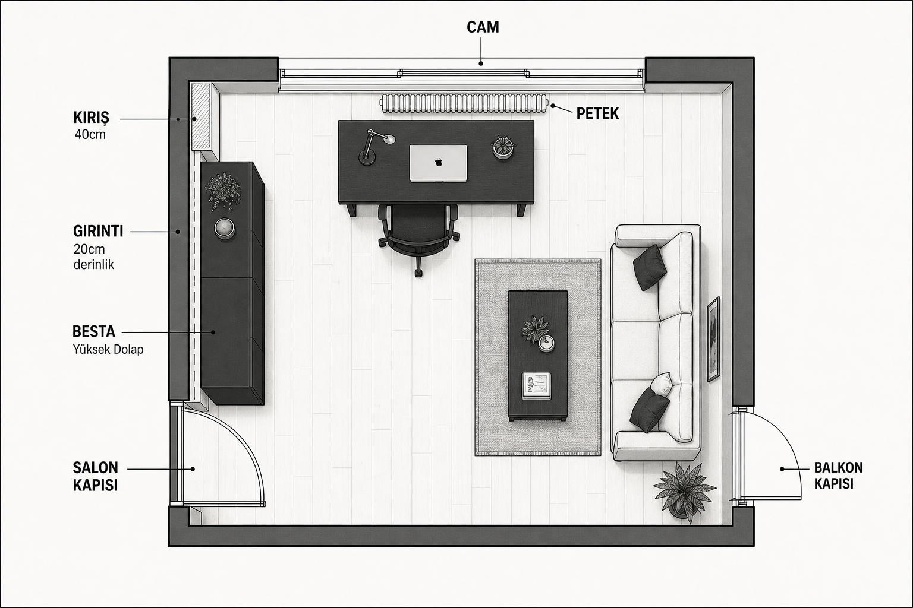

Salon kapısı
Salondan odaya açılan iç kapı. Kanat içeri döner — menteşe tarafına mobilya yaslanmaz; salınım yayı (~80–90 cm) boş kalır.
Beşiktaş · siyah / beyaz · satılabilir mobilya listesi
Salon kapısı, balkon kapısı, karşı cam + petek ve 40 cm kiriş / 20 cm girintiye göre kurulmuş atölye-oturma odası.
Önceki varsayımlar yerine senin tarif ettiğin sabitler — her karar bu dört öğeye kilitli.
Salondan odaya açılan iç kapı. Kanat içeri döner — menteşe tarafına mobilya yaslanmaz; salınım yayı (~80–90 cm) boş kalır.
Balkondan içeri açılan kapı. Geçiş + salınım için sağ duvar boyunca dar koridor şart. Ağır dolap buraya konmaz.
Karşı duvarda odaya bakan cam; altında petek. Masa peteğin önüne gelmez (ısı + parlama). Petek üstüne ince raf — ısı boşluğu bırakılarak.
Kiriş ~40 cm; duvar 20 cm derin girinti olarak devam eder. Bu derinliğe yalnızca sığ raf sığar (≈18 cm). 42 cm’lik dolaplar girintiye değil, kiriş yanı düz duvara.
Kulüp forması değil — semtin ve kartal kimliğinin mimari dili: siyah, beyaz, mat metal, net kontrast, Boğaz ışığı.
Mat siyah mobilya, kırık beyaz duvar, antrasit vurgu. Tek kırmızı nokta (opsiyonel): ince şerit veya tek poster — fazlası yok.
Siyah çelik + masif ahşap (FJÄLLBO dili), venge/siyah lake depolama, beyaz tül + siyah stor.
Şehir içi atölye: düzenli, sert ama yaşanır. Dağınık elektronik parçalar kapalı kutuda; yüzeyler boş.
İki kapı içeri açılır; orta eksen geçiş yolu. Masa cam-petek hattına paralel değil, dik veya ofset.

Her duvarın tek işi var; iki kapı salınımı dokunulmaz.
Masa peteğin hemen önüne konmaz. FJÄLLBO 140×70, cama dik / ofset; parlama azalır, ısı yolu açık kalır. Petek üstüne siyah ince raf (ısı boşluklu).
Girintiye 18 cm derin siyah duvar rafları + etiketli kutular. Kiriş yanı düz duvara BESTÅ (42 cm) — elektronik, yazıcı, kablo burada kapanır.
İki kapıdan uzak arka bantta siyah/antrasit oturma. Mevcut gülkurusu kanepe kalacaksa üzerine siyah-beyaz kırlent + tek battaniye ile 1903 diline çekilir.


Fiyatlar Temmuz 2026 IKEA Türkiye / mağaza sitelerinden; stok ve fiyat sipariş öncesi kontrol edilmeli.
Metal + masif ahşap, kablo klipsi, alt raf. Cam–petek hattına dik / ofset yerleştirilir. Kod: 905.876.90
ikea.com.tr →Baş/kol dayama, senkron eğim, 10 yıl garanti. Siyah-beyaz palete uyumlu antrasit. Kod: 702.611.50
ikea.com.tr →Kapalı + cam kapak: kablo, adaptör, yazıcı gizlenir. Girintiye değil — kiriş yanı düz duvara. Kod: 590.594.61
ikea.com.tr →BESTÅ’ya sığmayan kutular / sergi için. Kapaklı ek ünite ile kısmen kapanır. Kod: 202.758.85
ikea.com.tr →Kitap / vitrin; 28 cm derinlik. Alternatif depolama hattı. Örn. 160×202 cm kombinasyonlar.
ikea.com.tr →Cam altı peteğin üstüne; ısı boşluğu bırak. Doğal ahşap + mat siyah ayak modelleri.
moola.com.tr →20 cm girinti için kritik: 18 cm derin mat siyah yüzer raf. Girintiye flush oturur; kablo kutuları burada.
trendyol.com →Arka duvar oturma. Örn. Stone suni deri siyah veya Coupe siyah tekli/ikili. Mevcut pembe kanepe tutulursa siyah-beyaz tekstil ile uyumlanır.
vivense.com →Beyaz veya metal — siyah masa üstünde kontrast. Kablo düzeni için KOPPLA priz şeridi eklenir.
IKEA tamamlayıcılar →Önce boşalt ve ölç; sonra kapı salınımlarını bantla işaretle.